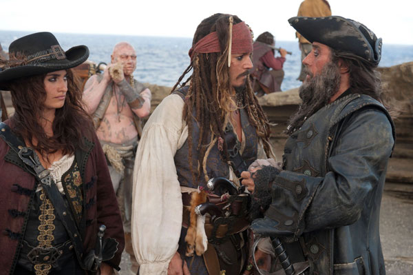
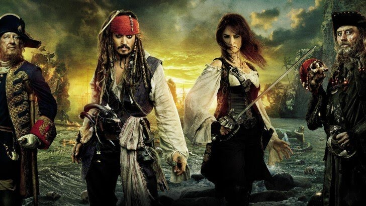

Pirati s Kariba: Nepoznate plime (Pirates of the Caribbean: On Stranger Tides) je pustolovni pomorski
ep, četvrti u Disneyevom filmskom serijalu Pirati s Kariba. Kao i u prethodnim nastavcima, glavnog lika
kapetana Jacka Sparrowa utjelovio je Johnny Depp, a u ostalim ulogama pojavljuju se Penelope Cruz, Ian
McShane i Geoffrey Rush. Film je režirao Rob Marshall, a producirao poznati Jerry Brukcheimer. Radnja
filma je djelomično utemeljena na istoimenom romanu Tima Powersa, Na čudnijim plimama. Film je prvi u
serijalu u kojem se pojavljuju stvarne, povijesne osobe i prvi kojeg nije režirao Gore Verbinski.
Premijera filma održana je u Disneylandu na Floridi 7. svibnja, a nakon toga uslijedila je turneja po
Europi koja je započela svečanom premijerom na filmskom festivalu u Cannesu, a nastavila se u Londonu,
Munchenu, Madridu i Moskvi. U Hrvatskoj je film u kinima zaigrao 19. svibnja, dan prije nego u SAD-u,
u čak 15 različitih gradova, na preko 30 ekrana i u pet različitih formata (35mm, Disney digital 2D,
Disney digital 3D, RealD 3D i IMAX 3D) što predstavlja dosadašnji rekord. U prva četiri dana prikazivanja
pogledalo ga je skoro 30 tisuća ljudi. Njegova zarada u Americi u prvom vikendu prikazivanja prešla je
brojku od 90 milijuna dolara, dok je sveukupno u svijetu film zaradio 350,1 milijun dolara čime je zasjeo
na treće mjesto najboljih kino otvaranja svih vremena, iza filmova Harry Potter i princ miješane krvi
(394 milijuna) i Spider-Man 3 (381,6 milijuna).
Radnja filma: 1750., španjolski kralj Ferdinand (Armesto) šalje ekspediciju u potragu za
legendarnim Izvorom mladosti. Istodobno, piratski kapetan Jack Sparrow (Depp) nađe se u Londonu, gdje
bude uhićen od britanskih vlasti. No ubrzo ga odvode pred samog kralja Georgea II. (Griffiths), koji
mu ponudi da predvodi ekspediciju u potrazi za Izvorom, jer ne želi da ga se Španjolci dokopaju. No
kako bi pri tome morao raditi sa Barbossom (Rush), čovjekom koji mu je ukrao brod, i koji je sada
kraljevski gusar, Jack odbija i spektakularno bježi iz Kraljevske palače. No nedugo zatim, Jack naiđe
na Angelicu (Cruz), svoju staru ljubav, koja ga prisilno ukrcava na Osvetu kraljice Anne, brod čuvenog
pirata Crnobradog (McShane), koji je njezin otac. Ne znajući da li Angelicu pokreće ljubav ili samo
beskrupulozna želja za pronalaženjem Izvora mladosti, Jack se nađe u neočekivanoj pustolovini u kojoj
ne zna treba li se više bojati Crnobradog, ili Angelice.

